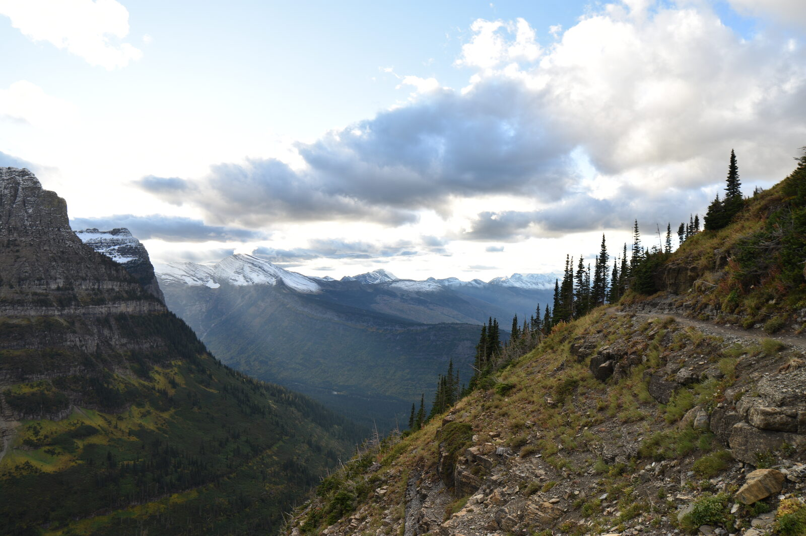
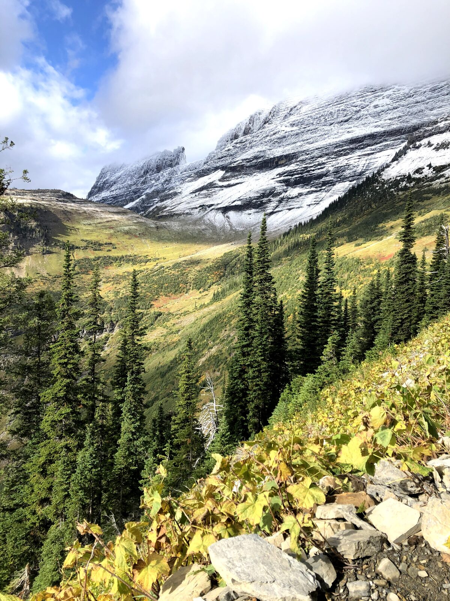
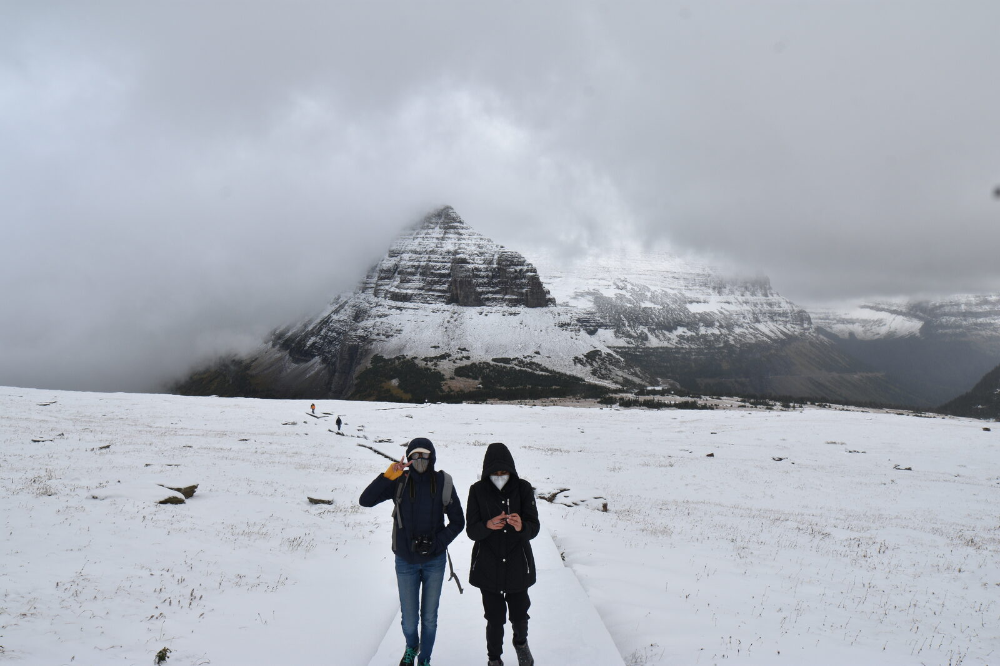

🏞️ Glacier National Park
A late-September trip to Glacier National Park based out of Kalispell and Whitefish, packed with alpine day hikes, the Going-to-the-Sun Road, and small-town Montana food and breweries.



🏞️
🏞️
🗺️ Itinerary
Day 1
Going-to-the-Sun corridor
Hike Avalanche Lake via the Trail of the Cedars, then St. Mary and Virginia Falls. Stargazing at Logan Pass.
Day 2
Logan Pass & high country
Drive the Going-to-the-Sun Road, hike Logan Pass to Hidden Lake, and tackle the Highline trail.
Flex days
More hikes
Grinnell Glacier and the Highline overlook, Red Rock Falls, Siyeh Pass, Swiftcurrent Lake, and Two Medicine Lake.
📌 Things to do
- Going-to-the-Sun Road — the park's iconic scenic drive
- Logan Pass — alpine pass; great for stargazing
- Avalanche Lake via Trail of the Cedars — short, flat, popular
- Hidden Lake from Logan Pass — classic short hike
- Grinnell Glacier via the Highline Trail
- St. Mary and Virginia Falls — waterfall hike
- Lake McDonald, Swiftcurrent & Two Medicine Lakes
- Siyeh Pass — long hike starting at Siyeh Bend
🍴 Where to eat
- Swift Creek Cafe (Whitefish) — breakfast; eggs Benedict and the Reuben
- Loula's Cafe (Whitefish) — huckleberry pie
- Cafe Kandahar (Whitefish) — dining
- Great Northern Brewing Company (Whitefish) — brewery
- Bonsai Brewing (Whitefish) — brewery
- Spotted Bear Spirits (Whitefish) — distillery
🛏️ Where to stay
- Whitefish — cabin-style rentals near dining and breweries
- Kalispell — central base near the airport and the park
💡 Good to know
- Carry bear spray on all hikes.
- Check the NPS site for trail status and seasonal closures.
- Fly into Glacier Park International (FCA) in Kalispell and rent a car.
- Late September is cold — pack thermals, warm jackets, and gloves.